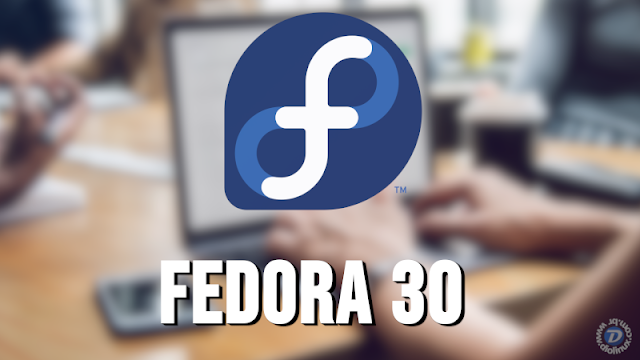
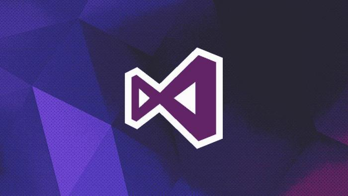
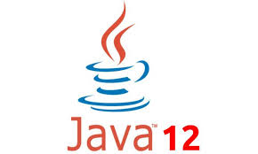
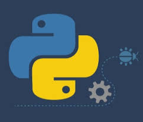

Novidades no Linux
A tão aguardada versão final do Fedora 30 está no meio de nós,
trazendo consigo as novidades que foram apresentadas na versão beta que foi lançada no mês passado.
O Fedora (anteriormente Fedora Core) é uma distribuição Linux desenvolvida pelo Projeto Fedora,
apoiado pela comunidade e de propriedade da Red Hat.
O Fedora contém software distribuído sob uma licença gratuita e de código aberto e tem como objetivo estar na vanguarda dessas tecnologias.

Novidades no C#
A Microsoft lançou o Visual Studio 2019 para usuários do Windows e do Mac.
O programa é um ambiente integrado da Microsoft para desenvolvimento de software especialmente dedicado
ao .NET Framework e às linguagens Visual Basic, C, C++, C# e F#.

Novidades no Java
O projeto Netrunner disponibilizou a mais recente versão do seu sistema baseado no Arch,
o Netrunner 2019.04 Rolling.
Confira as novidades e descubra onde baixar a distro.
O Netrunner é uma distribuição baseada no Debian que possui um desktop KDE altamente personalizado com aplicativos extras,
codecs de multimídia, plugins em Flash e Java, e uma aparência única.

Novidades no Java
o Python 3.8 está programado para aterrisar lá pra outubro de 2019,
mas já tem algumas coisas legais no forno.
Seguindo a tendência da versão atual a que está por vir trará novos ganhos de performance,
sepultando de vez a desculpa preferida dos procrastinadores de upgrades:
a de que Python 3 é mais lento do que Python legacy (de agora em diante vou chamar Python 2.x de Python legacy).